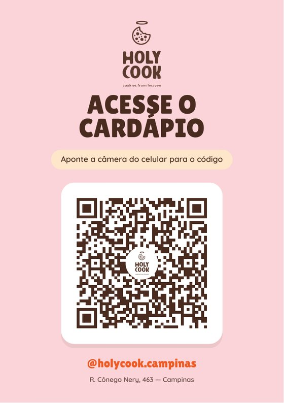

A mesma arte do cartaz que a loja já usa, refeita em vetor: logo, título, pílula creme, o QR num card branco e os dados da loja embaixo. Muda só para onde o código leva — o cardápio da loja ou o comparativo de preço com o iFood.

Na A4 vêm duas peças deitadas, uma sobre a outra, com a linha de corte tracejada no meio. É assim porque o A4 é exatamente duas A5: cortando a folha ao meio você fica com duas metades de 21 × 14,8 cm — que é uma A5. Depois do corte, vire o papel e o cartaz está em pé.
Imprima em tamanho real. Se a impressora estiver em "ajustar à página", ela encolhe tudo e o corte sai torto.
O selo redondo com o cookie no meio do código apaga módulos, então ele precisa caber na correção de erro. Ocupa 25% do lado, ou seja 4,9% da área, contra os 30% que a correção H recupera. Os doze PDFs foram conferidos de volta: cada QR foi lido por um decodificador e devolveu exatamente o endereço esperado.
Para mudar a loja, o destino ou o texto, tudo está nas tabelas LOJAS e DESTINOS no fim de gerar-cartaz-cardapio.py. As medidas da arte vieram do PDF original e estão anotadas no topo do mesmo arquivo.